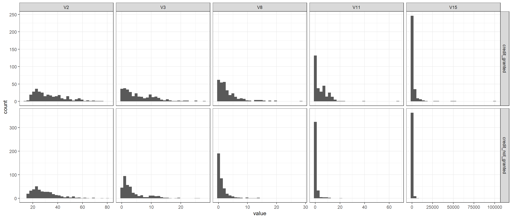

Predicting credit approval using binary logistic regression model
analysis
R
Author
Aditya Ranade
Published
March 14, 2025
I found this dataset on UCI machine learning repository which gives the credit approval dataset for a Japanese credit agency. The variable names have been changed to generic names and the factor levels have been changed to general symbols. We will look to build a logistic regression based on the data and try to predict if credit is given or not.
library(reshape2)library(ggplot2)library(dplyr)library(ggh4x)library(cmdstanr)library(bayesplot)library(rstanarm)# Get data from github repopath <-"https://raw.githubusercontent.com/adityaranade/portfolio/refs/heads/main/credit/data/crx.data"data0 <-read.table(path, sep=",")# Data processinghead(data0)
V1 V2 V3 V4 V5 V6 V7 V8 V9 V10 V11 V12 V13 V14 V15 V16
1 b 30.83 0.000 u g w v 1.25 t t 1 f g 00202 0 +
2 a 58.67 4.460 u g q h 3.04 t t 6 f g 00043 560 +
3 a 24.50 0.500 u g q h 1.50 t f 0 f g 00280 824 +
4 b 27.83 1.540 u g w v 3.75 t t 5 t g 00100 3 +
5 b 20.17 5.625 u g w v 1.71 t f 0 f s 00120 0 +
6 b 32.08 4.000 u g m v 2.50 t f 0 t g 00360 0 +
In this case, we will restrict ourselves to continuous response variables, namely V2, V3, V8, V11 and V15.
# V16 is the response +/- so convert the response to 0 and 1data0$response <-ifelse(data0$V16 =="+",1,ifelse(data0$V16 =="-",0,NA))data0$decision <-ifelse(data0$V16 =="+","credit_granted",ifelse(data0$V16 =="-","credit_not_granted",NA)) # Check the first 6 rows of the datasetdata0 |>head()
V1 V2 V3 V4 V5 V6 V7 V8 V9 V10 V11 V12 V13 V14 V15 V16 response
1 b 30.83 0.000 u g w v 1.25 t t 1 f g 00202 0 + 1
2 a 58.67 4.460 u g q h 3.04 t t 6 f g 00043 560 + 1
3 a 24.50 0.500 u g q h 1.50 t f 0 f g 00280 824 + 1
4 b 27.83 1.540 u g w v 3.75 t t 5 t g 00100 3 + 1
5 b 20.17 5.625 u g w v 1.71 t f 0 f s 00120 0 + 1
6 b 32.08 4.000 u g m v 2.50 t f 0 t g 00360 0 + 1
decision
1 credit_granted
2 credit_granted
3 credit_granted
4 credit_granted
5 credit_granted
6 credit_granted
# Convert the data into appropriate factors or numbersdata0$V2 <- data0$V2 |>as.numeric()data0$V3 <- data0$V3 |>as.numeric()data0$V8 <- data0$V8 |>as.numeric()data0$V11 <- data0$V11 |>as.numeric()data0$V15 <- data0$V15 |>as.numeric()# Combine only numerical data along with the responsedata1 <- data0 |> dplyr::select(response,V2,V3,V8,V11,V15)data2 <- data0 |> dplyr::select(decision,V2,V3,V8,V11,V15)# data1 |> str()# Check the number of NA valuessum(is.na(data1))
[1] 12
# Exclude the rows which has NA valuesdata10 <-na.omit(data1)
We look at the distribution of the continuous data variables based on if decision variable (credit given / credit not given)
# Data for histogrammelted_data <-melt(na.omit(data2), id="decision")# Plot the histogram of all the variablesggplot(melted_data,aes(value))+geom_histogram(aes(),bins =30)+facet_grid2(decision~variable, scales="free")+theme_bw()

The distribution of the first two variables (V2 and V3) is similar across the decision. So we will exclude these two variables from the model as it is unlikely to have an impact on the decision.
# Exclude V3 and V8 variablesdata <- data10[,-(2:3)]# split the data into training and testing dataseed <-55set.seed(seed)ind <-sample(floor(0.75*nrow(data)),replace =FALSE)# Training datasetdata_train <- data[ind,]# Testing datasetdata_test <- data[-c(ind),]data |>summary()
response V8 V11 V15
Min. :0.0000 Min. : 0.000 Min. : 0.000 Min. : 0.0
1st Qu.:0.0000 1st Qu.: 0.165 1st Qu.: 0.000 1st Qu.: 0.0
Median :0.0000 Median : 1.000 Median : 0.000 Median : 5.0
Mean :0.4499 Mean : 2.209 Mean : 2.435 Mean : 1021.2
3rd Qu.:1.0000 3rd Qu.: 2.574 3rd Qu.: 3.000 3rd Qu.: 395.5
Max. :1.0000 Max. :28.500 Max. :67.000 Max. :100000.0
# Read the STAN filefile_stan <-"logistic_regression.stan"# Compile stan modelmodel_stan <-cmdstan_model(stan_file = file_stan,cpp_options =list(stan_threads =TRUE))model_stan$check_syntax()
Now that the model is compiled, we will prepare the data to supply to the model to estimate the parameters based on the training data and make predictions on the testing data.
#Get the data in appropriate form to pass to STAN modelx_train <- data_train[,-1]y_train <- data_train[,1] x_test <- data_test[,-1]y_test <- data_test[,1]x_train <- x_train |>as.matrix()x_test <- x_test |>as.matrix()standata <-list(K =ncol(x_train),N1 =nrow(x_train),X1 = x_train,Y1 = y_train,N2 =nrow(x_test),X2 = x_test,Y2 = y_test)fit_optim <- model_stan$optimize(data = standata,seed = seed,threads =10)
fsum_optim <-as.data.frame(fit_optim$summary())# The optimized parameter would be par_ind <-2:(ncol(x_train)+2)opt_pars <- fsum_optim[par_ind,]opt_pars
# starting value of parametersstart_parameters <-rep(list(list(alpha = opt_pars[1,2],beta = opt_pars[-1,2])),4)# Run the MCMC with optimized values as the starting valuesfit <- model_stan$sample(data = standata,init = start_parameters,seed = seed,iter_warmup =10000,iter_sampling =10000,chains =4,parallel_chains =4,refresh =10000,threads =32,save_warmup =FALSE)
# Save the summaryfsum <-as.data.frame(fit$summary())
Next we look at the posterior distribution of the parameters and the trace plots. The posterior distribution of the parameters are unimodel and the trace plots indicates a good mix. So no issues with convergence.
# Plot posterior distribution of parametersbayesplot::color_scheme_set("gray")bayesplot::mcmc_dens(fit$draws(c("alpha","beta")))
Now we check the prediction. The STAN model calculates the posterior probability. If the probability is greater than 1, we predict the response to be 1 and 0 otherwise. Based on the predictions, we will generate the confusion matrix.
# Check the predictionspred_ind <- (max(par_ind)+1):(max(par_ind)+length(y_test))# predicted probabilitypred_prob <- fsum[pred_ind,2]pred_outcome <-ifelse(pred_prob>0.5,1,0)# Generate the confusion matrixconf_matrix2 <- caret::confusionMatrix(as.factor(pred_outcome),as.factor(y_test))conf_matrix2
Confusion Matrix and Statistics
Reference
Prediction 0 1
0 100 21
1 9 40
Accuracy : 0.8235
95% CI : (0.7578, 0.8777)
No Information Rate : 0.6412
P-Value [Acc > NIR] : 1.358e-07
Kappa : 0.5991
Mcnemar's Test P-Value : 0.04461
Sensitivity : 0.9174
Specificity : 0.6557
Pos Pred Value : 0.8264
Neg Pred Value : 0.8163
Prevalence : 0.6412
Detection Rate : 0.5882
Detection Prevalence : 0.7118
Balanced Accuracy : 0.7866
'Positive' Class : 0
# Accuracyaccuracy <-mean(pred_outcome == y_test)print(paste('Accuracy is ',round(accuracy,4)))
[1] "Accuracy is 0.8235"
Our model has an accuracy of around 83% which indicates the model is correctly identifying the positive and negative cases in around 83% of the cases. Next, we look at the Receiver Operating Characteristic (ROC) curve. It plots the True Positive Rate (TPR) against the False Positive Rate (FPR). It is the visualization of trade-off between correctly identifying positive cases and incorrectly identifying negative cases as positive. A good model ROC curve which goes from bottom left to top left which means the model is perfectly identifying positive cases and does not identify negatives as positive. On the other hand, a ROC curve which is a straight line from bottom left to to right with slope 1 indicates the model is randomly assigning the positive and negative cases. Our curve is somewhere in between these 2 extreme cases and is decent. The area under the curve (AUC) is around 79% which is also decent.